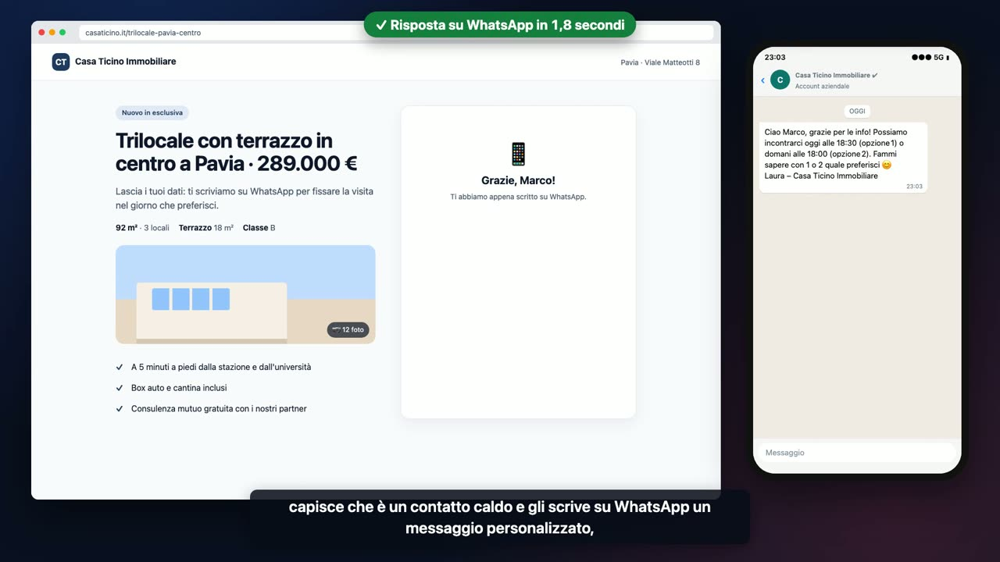
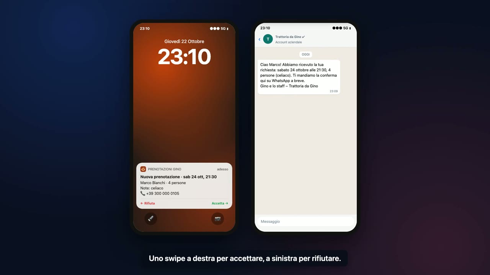
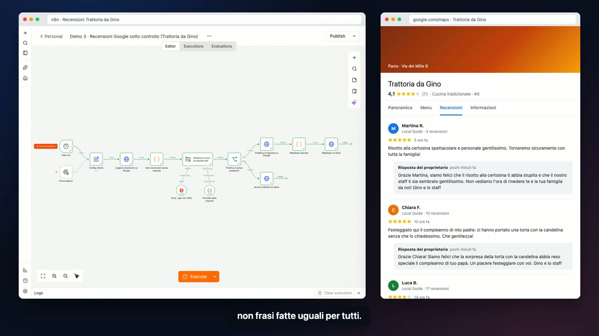
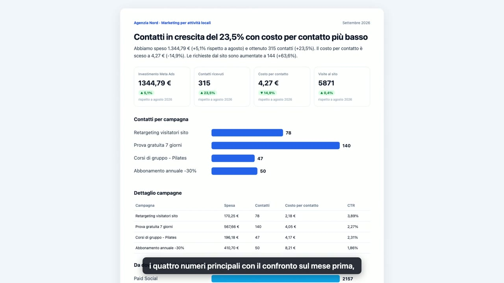

19:50
L’ufficio ha chiuso.

Il lead che riceve risposta in 60 secondi
Per agenzie immobiliari e attività simili.
Le campagne portano contatti, ma l’immobiliare li richiama dopo uno o due giorni. Nel frattempo chi cerca casa ha già fissato una visita altrove.
- Chi compila il modulo riceve in pochi secondi un WhatsApp personalizzato, anche di sera.
- L’AI capisce chi è un contatto caldo e lo segnala subito all’ufficio.
- Ogni contatto resta tracciato: numeri da mostrare al cliente.
20:17
Il ristorante è in pieno servizio.

Il telefono che prende le prenotazioni
Per ristoranti, pizzerie, agriturismi.
Durante il servizio nessuno ha tempo di rispondere al telefono. Ogni chiamata persa è un tavolo che resta vuoto.
- Un centralino con l’AI risponde a ogni chiamata e parla con il cliente in italiano.
- Rispetta le serate al completo e propone subito gli orari liberi.
- Il gestore accetta con uno swipe e il cliente riceve la conferma su WhatsApp.
··:00
Ogni ora, anche di notte.

Recensioni Google sotto controllo
Per ristoranti, hotel, negozi, studi professionali.
Il titolare non ha tempo di rispondere a tutte, e quando lo fa usa la stessa frase per tutti. Le negative restano lì giorni senza che nessuno se ne accorga.
- Le recensioni positive ricevono una risposta personale, nel tono del locale.
- Le negative arrivano al titolare con una bozza di risposta pronta.
- Nessuna recensione resta dimenticata.
08:00
È il primo del mese.

Il report mensile che si scrive da solo
Per tutte le agenzie con clienti in gestione Ads.
A inizio mese gli account passano ore a copiare numeri da Meta Ads e Google Analytics. Con venti clienti sono giornate di lavoro, ogni mese.
- I dati di Meta Ads e Google Analytics vengono raccolti il primo del mese.
- Il commento è scritto in italiano semplice, per il titolare.
- L’account lo rivede in cinque minuti invece di due ore.
Pensate per essere rivendute dall’agenzia
Un modello linguistico scrive in italiano naturale: qualifica un lead, commenta i numeri del mese, risponde a una recensione, ricava una prenotazione da una telefonata. Il modello si cambia in un clic, da OpenAI ad Anthropic a Mistral.
Il cliente capisce cosa compra
Ognuna sposta un numero che il titolare conosce: contatti che diventano appuntamenti, ore risparmiate, stelle su Google, tavoli pieni.
Escono con il vostro marchio
Nome, firma, tono di voce, orari e canali del cliente stanno in un unico blocco. Per un cliente nuovo si duplica il flusso e si cambia quello.
Restano dell’agenzia
Girano su n8n, lo standard di mercato, sul vostro server o su n8n Cloud. Nessuna piattaforma chiusa.
Si collegano a quello che i clienti usano già
WhatsApp Business, Meta, Google, Slack, HubSpot e i gestionali più diffusi.
Lavorate in un’agenzia e volete una di queste automazioni per i vostri clienti? Scrivetemi.
ebrahim06abdelwahed@Preventivo su misura: setup una tantum più manutenzione mensile.